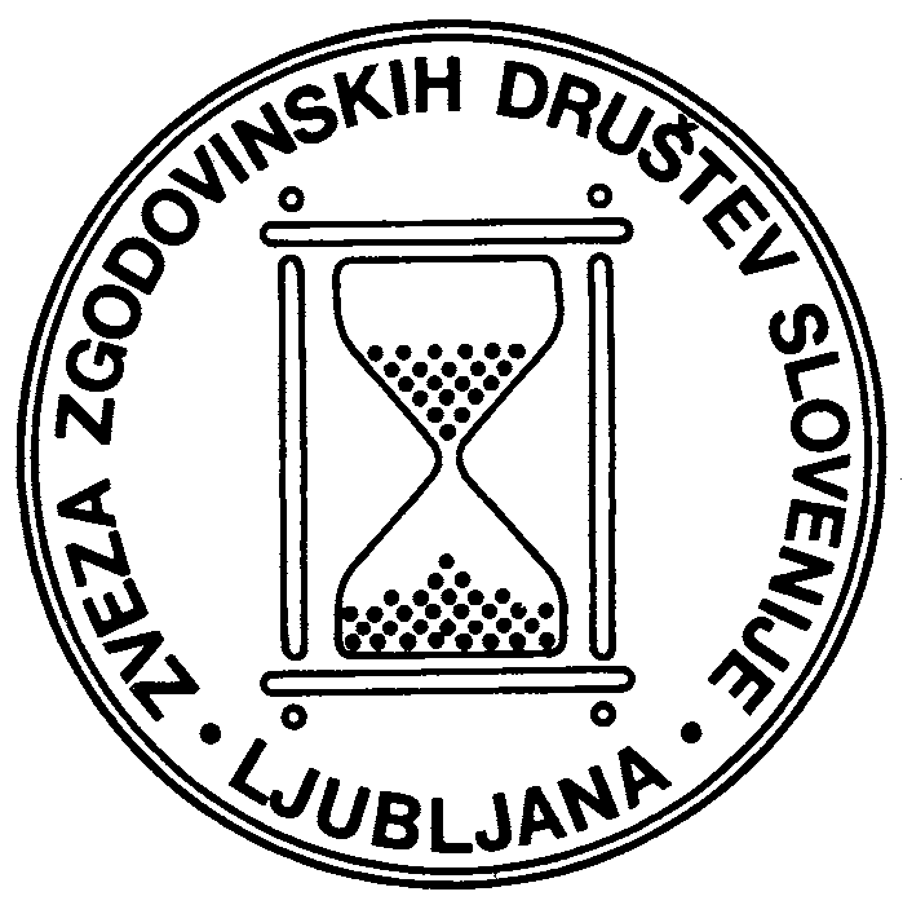

Vljudno vabljene in vabljeni na
42. zborovanje slovenskih zgodovinark in zgodovinarjev:
Nova spoznanja o zgodovini v urbanih naselbinah
Mestni muzej Črnomelj, 20. in 21. oktober 2027
Zgodovini urbanih naselbin v slovenskem zgodovinopisju že dolgo pripada vidno mesto. Prav zdaj pa v več zgodovinopisnih ustanovah potekajo izvirne raziskave na temo zborovanja. Poznavanje zgodovine največjega mesta na ozemlju današnje Slovenije v poznem srednjem in na pragu novega veka, Kopra, ki je bil del sredozemske, po tedanjih standardih poudarjeno urbane kulture, dobiva povsem nove razsežnosti – na podlagi podatkov iz dolga desetletja nedostopnega arhiva. Nastaja zgodovinski atlas Ljubljane, ki temelji na obsežnem raziskovalnem delu. Obdelava primarnih virov prevetruje poznavanje kostanjeviške družine mestnega prava. Stik med arheologijo in zgodovino temeljito nadgrajuje poznavanje Otoka/Gutenwerda. Intenzivne raziskave prav zdaj poglabljajo poznavanje zgodovinskih dogodkov, procesov in struktur raznolikih vidikov zgodovine več urbanih naselbin na Slovenskem in življenja v njih.
Cilj zborovanja je, da prek (inter)disciplinarnih vpogledov v luči pluralizacije raziskovalnih tem in epistemoloških prijemov – z zastavljanjem novih vprašanj in nadgradnjo poznavanja uveljavljenih tem – poglobimo poznavanje vsega urbanega v zgodovini, rezultate o slovenskem prostoru pa postavimo v širši mednarodni kontekst. Referate bodo zaznamovali prostorski obrat v zgodovinopisju, (inter)disciplinarni vpogledi v predmoderne urbane naselbine, industrializacijo in modernizacijo ter njihove družbene, gospodarske in okoljske posledice.
Vabljeni k prijavi prispevkov o vseh zgodovinskih obdobjih, denimo na sledeče teme:
Omogočimo drug drugemu, da na osrednjem zborovanju slovenskih zgodovinark in zgodovinarjev poglobimo svoje poznavanje čim več novih raziskav ter svoje poznavanje sodobnega pedagoškega in aplikativnega dela na področju zgodovine v urbanih naselbinah. Zato vzpodbujamo, da članice in člani projektnih in programskih skupin s prispevki sodelujete tudi na zborovanju ZZDS in ne le na tematskih konferencah doma in v tujini.
Posebej k udeležbi vabimo tudi učiteljice in učitelje zgodovine. Želimo si namreč več povezovanja med raziskovalno in pedagoško sfero. Zelo dobrodošli so učiteljski referati, npr. primeri dobrih praks iz poučevanja o zgodovinskih strukturah, procesih, dogodkih v urbanih naseljih; učiteljice in učitelji kot aktivni soudeleženci in soudeleženke. Zborovanje bo izpolnjevalo kriterije učiteljskega mednarodnega izobraževanja: referentke in referenti bodo iz vsaj štirih držav (ker pa gre za osrednje zborovanje slovenskega zgodovinopisja, bomo slovenski avtorice in avtorji referate predstavili v slovenščini). Zborovanje bo vpisano v katalog Katis, ki zagotavlja točkovno ovrednotenje. Zagotovljeni bodo 20-minutno trajanje referatov, potrdila o udeležbi za učiteljice in učitelje ter objava prispevkov, namenjenih poučevanju zgodovine, v zborniku. Raziskovalke in raziskovalce spodbujamo, da poleg svoje znanstvene objave (prijazno vabljeni, a ne zavezani ste k objavi prispevkov v Kroniki ali Zgodovinskem časopisu) na podlagi svojega referata pripravite pouku zgodovine namenjeno kratko objavo reprezentativnega (odlomka) primarnega zgodovinskega vira s komentarjem, saj je to tip gradiv, ki bi v luči novih učnih načrtov posebej koristil. Tudi to bomo objavili v zborniku, namenjenem poučevanju.
Spodbujamo prijavo (1) vsebinsko zaokroženih panelov iz dveh do treh 20-minutnih referatov in moderatorke ali moderatorja, (2) posameznih referatov, če ne najdete kolegic ali kolegov, s katerimi bi se povezali v panel, (3) predstavitev novih monografij, (4) plakatov in (5) okroglih miz, po želji pa tudi (6) drugačnih tipov prispevkov, kot so manjše razstave, filmske projekcije ipd.
Za vsak prispevek nam pošljite izvleček v obsegu 800 do 1200 znakov, vključno s presledki, na naslov info.zzds@gmail.com. Z izvlečkom oddajte kratke življenjepise vseh sodelujočih (okvirno 50 do 60 besed za vsakogar – ključno je, kje avtorica/avtor deluje, stopnja dosežene izobrazbe in kak ključen dosežek). Pojasnilo glede prispevkov tipov (1) in (5) iz prejšnjega odstavka: v primeru panela naj vodja panela pošlje naslov panela, ime moderatorke ali moderatorja, za vsak referat iz panela pa vodja pošlje naslov, imena in kratke življenjepise avtoric in avtorjev ter izvleček referata (izvlečka celotnega panela ni potrebno pisati). Okrogla miza šteje kot en prispevek – oddajte skupni izvleček.
Rok za oddajo izvlečkov vseh tipov prispevkov je 7. november 2026. Opravili bomo recenzijo prejetih predlogov, tako da boste do 20. decembra 2026 obveščeni, ali je vaš prispevek uvrščen na program Zborovanja. Izvlečki prispevkov bodo objavljeni v konferenčni publikaciji.
Kotizacija zborovanja bo bistveno nižja od tiste, ki jo plačujemo za udeležbo na konferencah v tujini. Septembra vas bomo obvestili, koliko natanko znaša. Hkrati bomo poslali na učnih načrtih temelječ seznam tem, ki omogočajo enostavno navezavo med novimi raziskovalnimi rezultati in poukom zgodovine. Aplikativnost raziskovalnih rezultatov pri pouku ni obvezen predpogoj za uvrstitev prispevka na program, spodbujamo pa k razmisleku v tej smeri.
Namen tega vabila je, da si pravočasno rezervirate čas 20. in 21. oktobra 2027 in da vas spodbudimo k razmisleku o temi vašega referata, da nam boste do 7. novembra letos lahko poslali izvlečke.
Veselimo se vsebinsko in metodološko bogatega 42. zborovanja slovenskih zgodovinark in zgodovinarjev, v gostoljubni Beli krajini, kjer bo zborovanje ZZDS potekalo prvič!
Vodstvo ZZDS